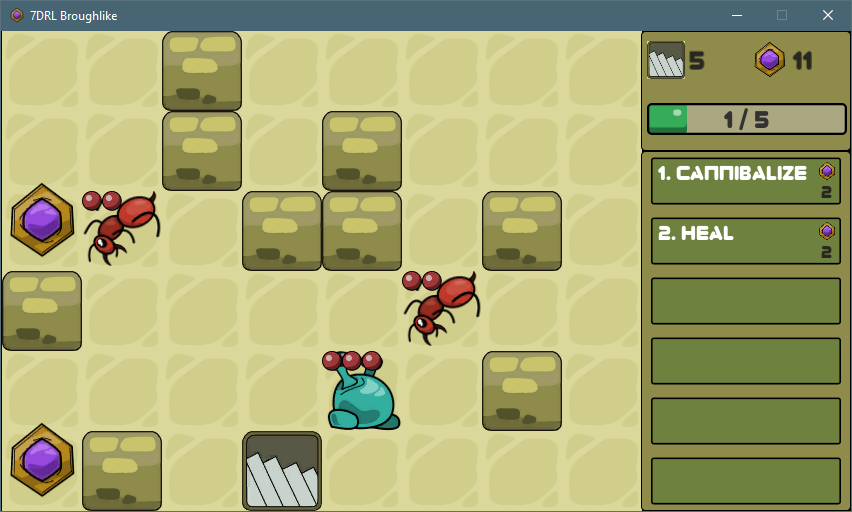

This post is also available on my itch.io project page.
A short disclaimer before you start reading; after writing out most of the things I want to talk about working on this project, this post becomes so long and incredibly boring just to even look at. So I split it into two parts with some introductory stuffs in here, and a more detailed design deep dives in the second post. So, you can skip ahead if you don't really care about the back stories.
About a month ago, I stumbled upon this nice little tutorial series, which plays on a very niche sub-genre of the Roguelike games called "Broughlikes". For those of you who don't know what "Roguelike" means, I'll trust your ability to Google stuffs in order to respect the time of those who do. But if you're not really into Roguelike games at all, I suppose this article will mostly just bore you.
So, the term Broughlike was named after an indie developer, Michael Brough, who created a series of charming, weird games like Imbroglio and 868-Hack. Imbroglio has actually been one of my favorite and longest standing game on my phone ever since I saw this Gamasutra article a few years ago. Back then, even though I was immediately hooked with the game after I bought it, I only took it as a small Roguelike game with interesting puzzle elements. Nothing more. That is, of course, until I discovered the tutorial series mentioned above.
There are a few key characteristics to Broughlike games that make them stand out even from regular Roguelikes. But the main premises that stuck around in my head for so long (ever since I've started playing Imbroglio) were the concept of “small worlds”, very refined and controlled randomness, and simple yet very deeply designed game rules. There are a couple of other games that came into my mind which has similar properties to it (Road Not Taken being one of them, Crypt of the Necrodancer being another) but they mostly focus on the idea of Roguelikes rather than just smallish, confined worlds. I’ve always wanted to play with this design concept myself too, but never been able to get into it. Mostly because I didn’t know where to start, how to design the mechanics or how things simply just fit together in a tiny space. The tutorial finally gave me a good jump start.
THIS is essentially what I ended up with after working furiously on the tutorial for about 20 hours.

I’m not including this screenshot for showing off my ability to follow a step-by-step tutorial. Instead, I’m using this as a reference point before I move onto a proper project and put my own spin on it. Because if you play the game that comes with the tutorial, you can immediately get a feel of how janky it is. The gameplay is incredibly imbalanced, your own basic attack is downright overpowered, a lot of the elements like the spells and enemy behaviors are confusing as hell. I’m not bad-mouthing the tutorial series of course. The series itself was very well done. And the game that came out of it was objectively never meant to be a good one either. I’m only mentioning this just to get my own reference point for how much I’ve improved myself on approaching this design concept in the coming weeks. Like I said before, I didn't really know where to start. Now that I do, if I can't make something at least a little bit better than this, then I haven't learned anything at all.
Enter... the 7 Days Roguelike Challenge
After I wrapped up the tutorial game, I was so hyped with what I've learned, I immediately wanted to start working on something of my own. And what better way to apply the new found knowledge than working in a game jam? I didn't have to look around much, because sure enough, the 7DRL Challenge 2021 was currently underway. Even though the jam was a week long, I only caught the tail end of it with less than 72 hours to work with. Well, I've been in multiple 48 hours jams before, so how hard could it be to finish something within that period of time. Spoiler alert, I didn't finish in time for submission. One of the main reason was me wasting one third of that available time picking out THE perfect game engine to work with for this particular type of game (which I DEFINITELY don't normally do in similar scenarios ;-], but that's gonna be a story for another time).
BUT... rather than simply demoralized and abandoned the game straightaway (like I ALSO definitely don't usually do), I kept working on it. So, this article or rather, this dev log series, is mostly about my experience working on a little bit longer form project than usual, lessons learned and maybe talk about some of the design decisions I made along the way. And since I've already got almost 60 hours of work under my belt, I figured this is a good time as any to pause for a moment and reflect a little bit.
Even though I'm using the tutorial game as a starting point, I didn't actually reuse its code base at all. Instead, I've started everything from scratch in Unity (aside from upscaling the sprites I've already drawn while working on the tutorial of course). I came very, very close towards building my own engine using a framework like MonoGame or something similar as a baseline, because basic functionalities like the map generation, movement, entity relations and hierarchy are that simple and specific enough to not warrant a reliance on any of those shiny features available in modern game engines. If you can draw a 2D sprite and move things around on the screen relatively easy, then you're pretty much good to go. But for now, let's just say that learning how to design interesting mechanics is my primary goal for this project.
So, here goes.